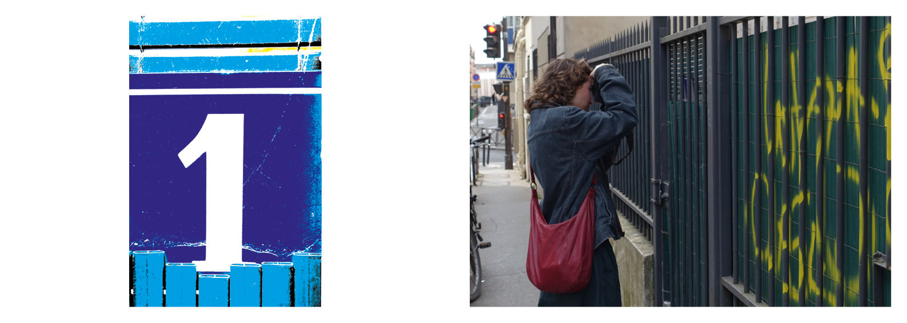
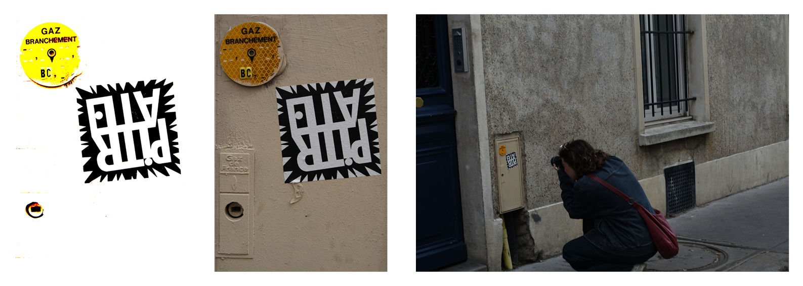
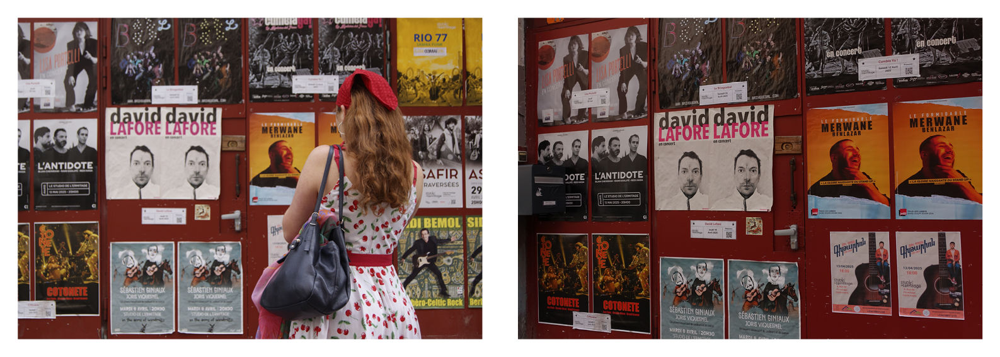
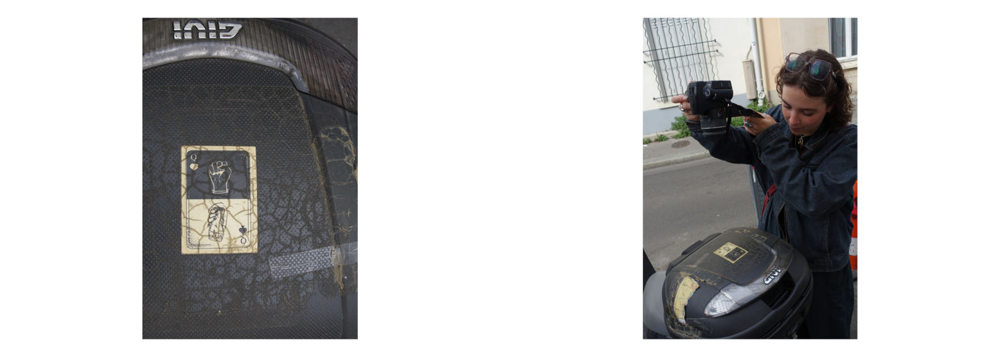
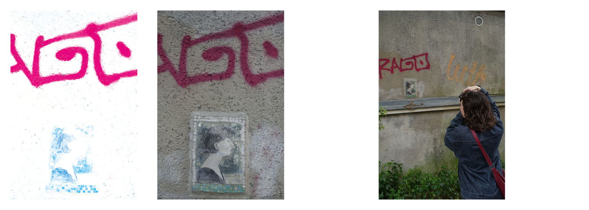
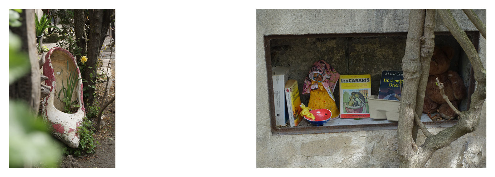
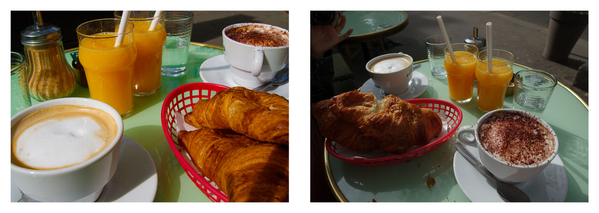
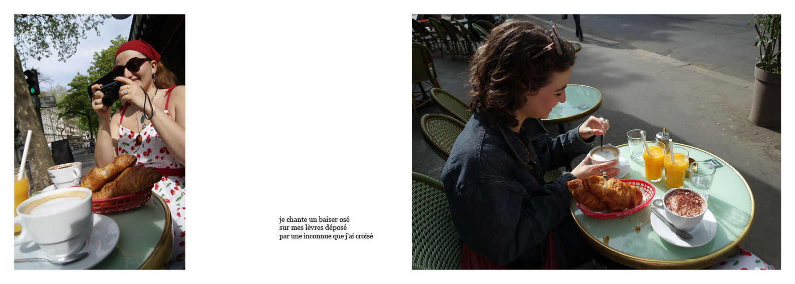
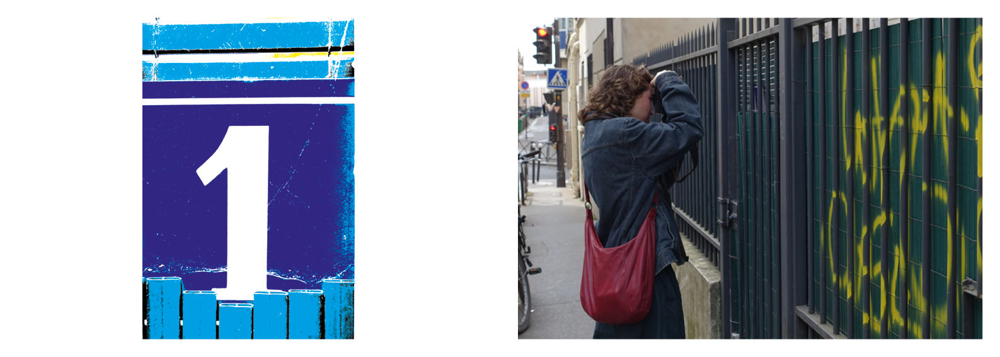
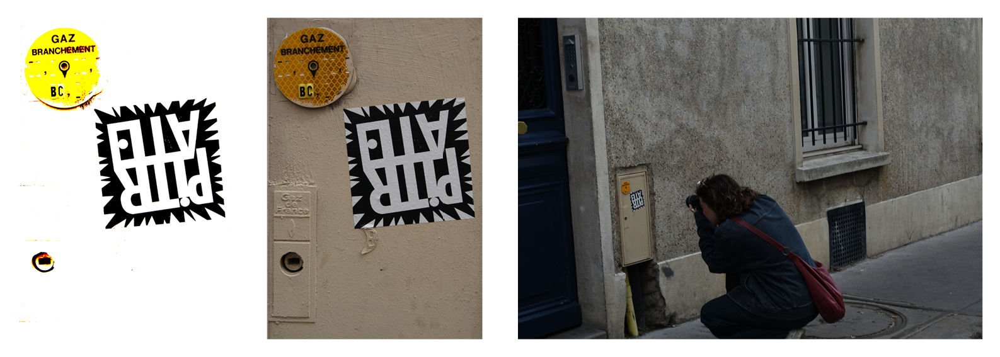
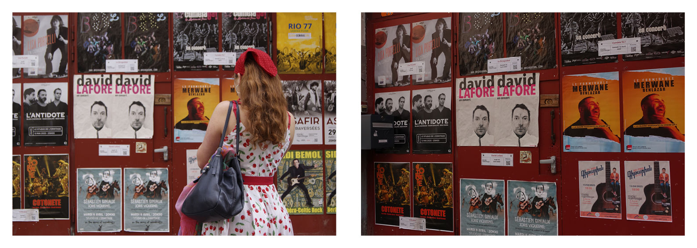
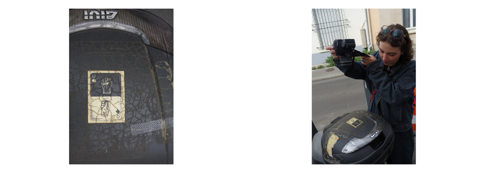
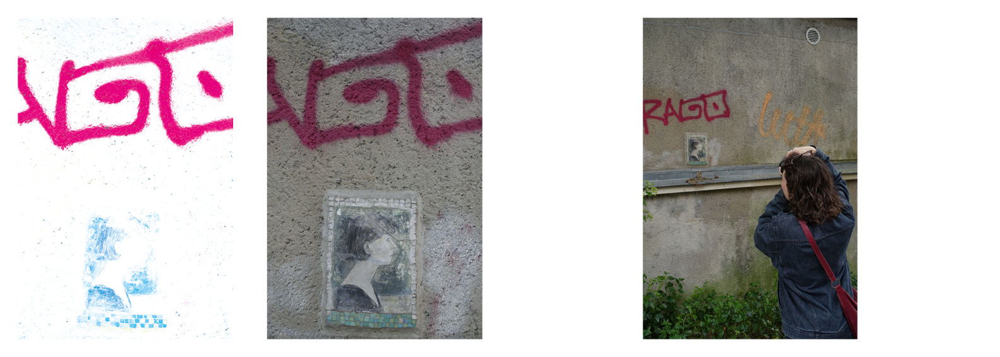
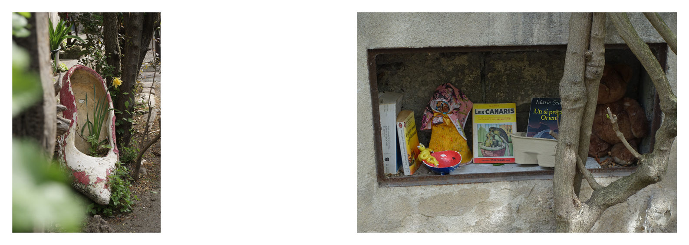
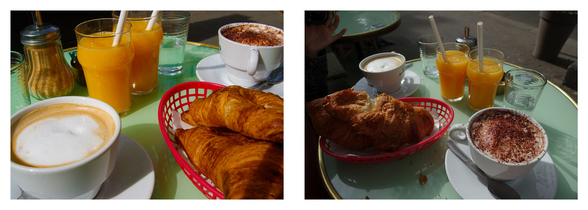
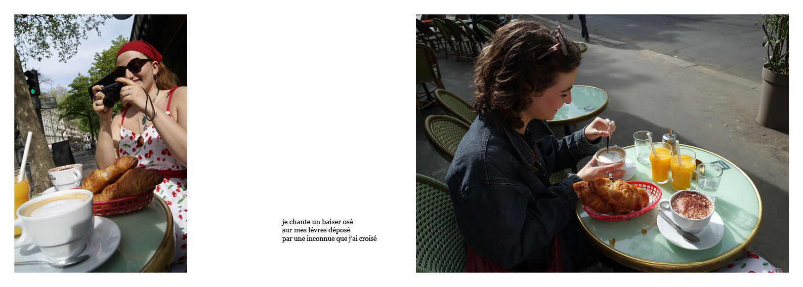
Ce projet photos réalisé à Paris en avril 2025, avait pour but de travailler en duo. Avec mon amie et collègue Léa Roa--Jaillet, nous avions pour idée de prendre en photos nos trajets respectifs jusqu'à un point de rendez-vous à égale distance de chez nous. Elle, plus enclin à se tourné vers la couleur, et moi au rapport du texte-image par le biais de mes photos "volées". La seconde partie du travail était de photographier durant notre balade commune, certains endroits, objets et voir si notre regard capturait la même chose. Tantôt oui, tantôt l'une photographiait l'autre qui prenait en photo autre chose. Parfois, nos photos se répondaient sans qu'on le sache.